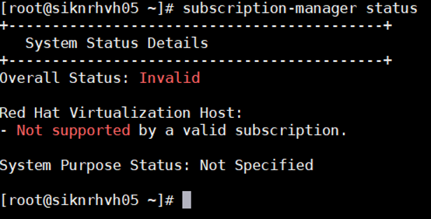
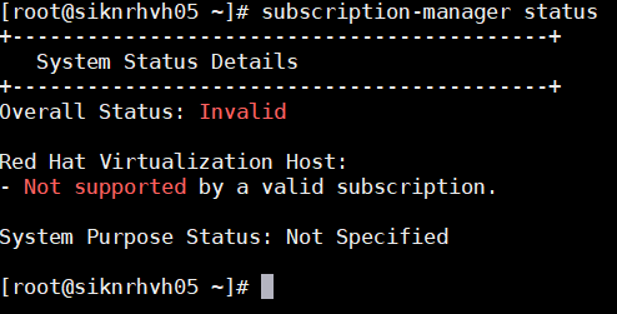

Mengubah DNS
nano /etc/resolve.conf
Melihat status subscription
subscription-manager status

Download Tutorial

memperpanjang subscription
subscription-manager attach --auto
nano /etc/resolve.conf
subscription-manager status

Download Tutorial
subscription-manager attach --auto